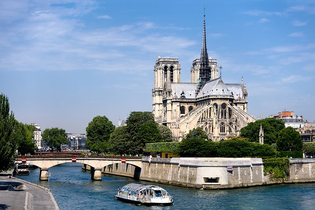
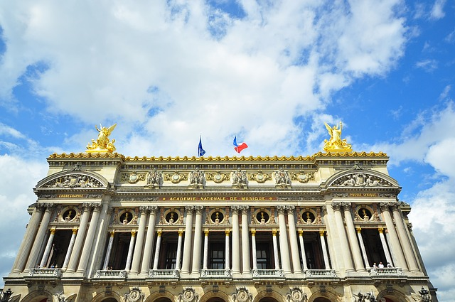
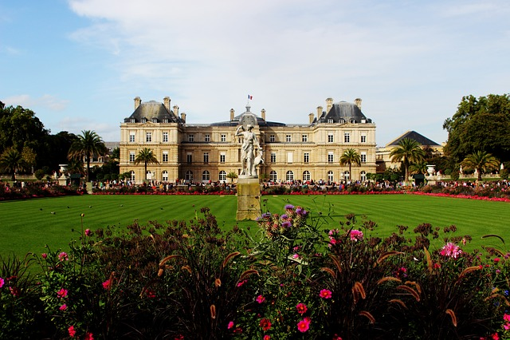

Sights
There are lots of sights to see in Paris. The Eiffel Tower and La Louvre are must see sights,
but here are some uncommon things to do in Paris!

La Seine
The Seine is one of the main attractions of Paris. You will see daily river cruises that take you around all of Paris along the water. However, there are some things to do in Paris along the Seine that not many people know about. At sunset, there are lots of dancing parties. No, I don't mean clubbing or actual partying, I mean dancing parties. If you see a couple start to do the tango along the water, feel free to join in! Tango parties on the Seine are the thing to do here at sunset and it's a romantic night out for free!

Academie Nationale de Musique
Known as Palais Garnier or simply the Paris Opera, this is a beautiful building. The exterior hails back to an architectural design of the 1800s. Come here to discover the theater of Paris and take in the marvelous design of the exterior and interior. Tickets should be purchased in advance as the shows can be sold out!
